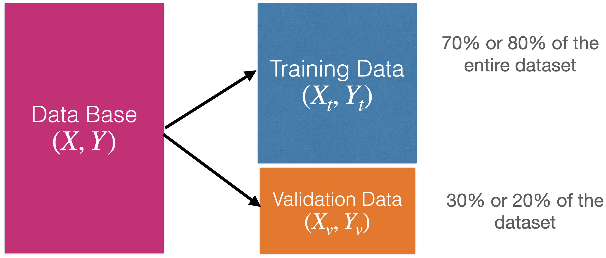
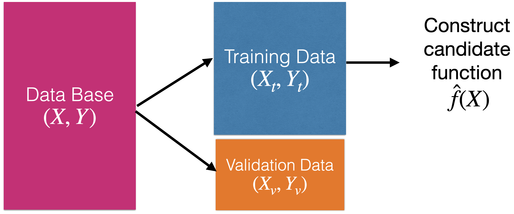
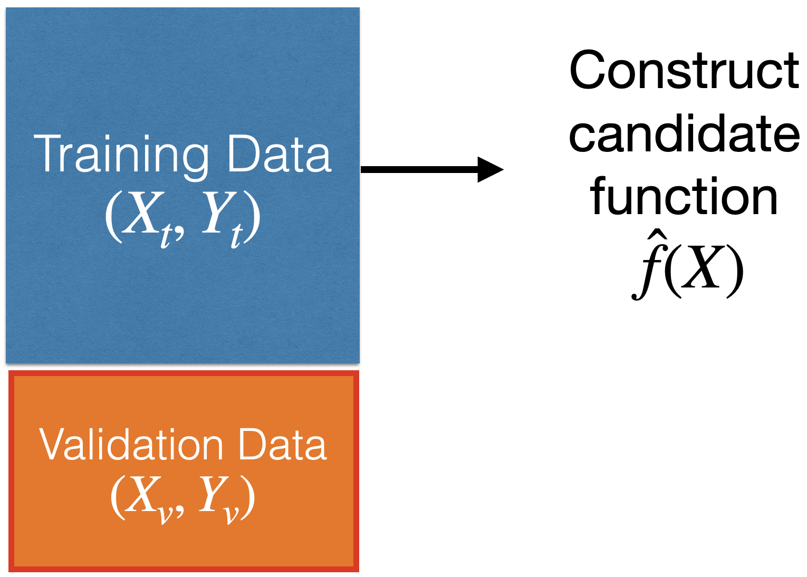
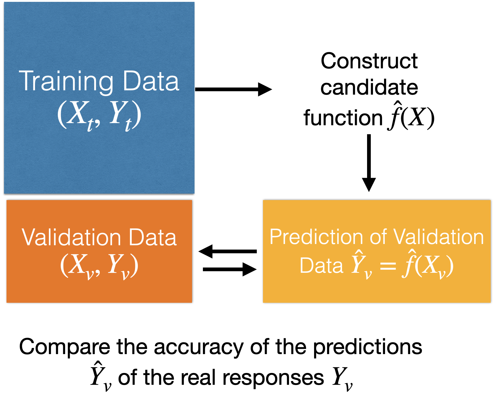
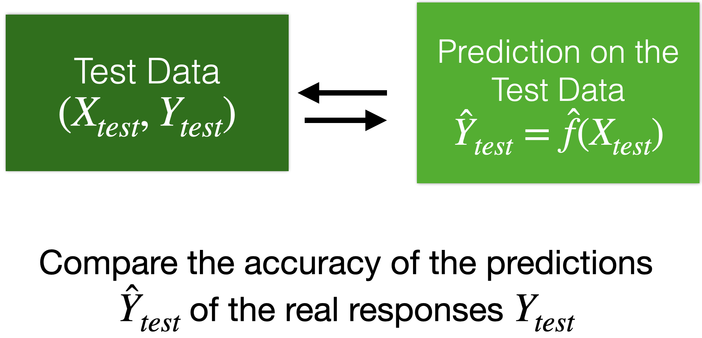
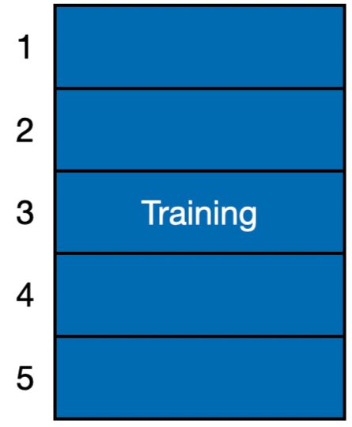
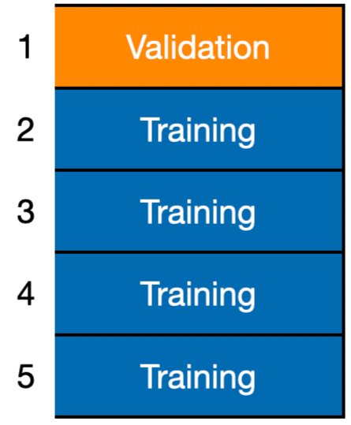
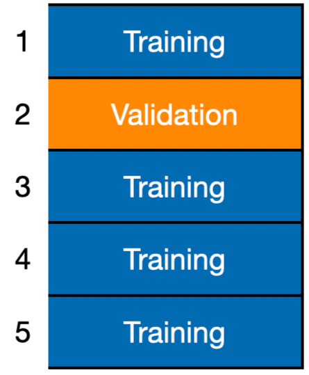
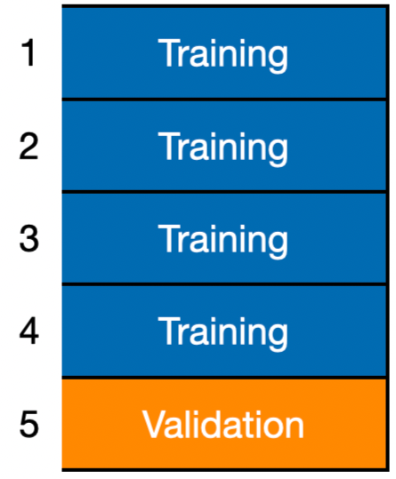

Supervised Learning and Linear Regression
IN5148: Statistics and Data Science with Applications in Engineering
Department of Industrial Engineering
Agenda
- Introduction to Supervised Learning
- Linear Regression Model
- K-fold Cross Validation
Load the libraries
Before we start, let’s import the data science libraries into Python.
Here, we use specific functions from the pandas, matplotlib, seaborn and sklearn libraries in Python.
Introduction to Supervised Learning
Supervised Learning
Includes algorithms that learn by example. The user provides the supervised algorithm with a known data set that includes the corresponding known inputs and outputs. The algorithm must find a method to determine how to reach those inputs and outputs.
While the user knows the correct answers to the problem, the algorithm identifies patterns in the data, learns from observations, and makes predictions.
The algorithm makes predictions that can be corrected by the user, and this process continues until the algorithm reaches a high level of accuracy and performance.
Supervised learning problems
Regression Problems. The response is numerical. For example, a person’s income, the value of a house, or a patient’s blood pressure.
Classification Problems. The response is categorical and involves K different categories. For example, the brand of a product purchased (A, B, C) or whether a person defaults on a debt (yes or no).
The predictors (\(\boldsymbol{X}\)) can be numerical or categorical.
Supervised learning problems
Regression Problems. The response is numerical. For example, a person’s income, the value of a house, or a patient’s blood pressure.
Classification Problems. The response is categorical and involves K different categories. For example, the brand of a product purchased (A, B, C) or whether a person defaults on a debt (yes or no).
The predictors (\(\boldsymbol{X}\)) can be numerical or categorical.
Regression problem
Goal: Find the best function \(f(\boldsymbol{X})\) of the predictors \(\boldsymbol{X} = (X_1, \ldots, X_p)\) that describes the response \(Y\).
In mathematical terms, we want to establish the following relationship:
\[Y = f(\boldsymbol{X}) + \epsilon\]
- Where \(\epsilon\) is a natural (random) error.
How to find the shape of \(f(X)\)?
Using training data. 
How to find the shape of \(f(X)\)?
Using training data.
How to evaluate the quality of the candidate function \(\hat{f}(X)\)?
Using validation data.

How to evaluate the quality of the candidate function \(\hat{f}(X)\)?
Using validation data.

Moreover…
We can use test data for a final evaluation of the model.
Test data is data obtained from the process that generated the training data.
Test data is independent of the training data.

Linear Regression Model
Linear Regression Model
A common candidate function for predicting a response is the linear regression model. It has the mathematical form:
\[\hat{Y}_i = \hat{f}(\boldsymbol{X}_i) = \hat{\beta}_0 + \hat{\beta}_1 X_{i1} + \cdots + \hat{\beta}_p X_{ip}.\]
Where \(i = 1, \ldots, n_t\) is the index of the \(n_t\) training data.
\(\hat{Y}_i\) is the prediction of the actual value of the response \(Y_i\) associated with values of \(p\) predictors denoted by \(\boldsymbol{X}_i = (X_{i1}, \ldots, X_{ip})\).
The values \(\hat{\beta}_0\), \(\hat{\beta}_1\), …, \(\hat{\beta}_p\) are the coefficients of the model.
The values of \(\hat{\beta}_0\), \(\hat{\beta}_1\), …, \(\hat{\beta}_p\) are obtained from the training data using method of least squares.
This method finds the coefficient values that minimize the error made by the model \(\hat{f}(X_i)\) when trying to predict the responses in the training set:
\[RSS = \sum_{i=1}^{n_t} (Y_i - (\hat{\beta}_0 + \hat{\beta}_1 X_{i1} + \cdots + \hat{\beta}_p X_{ip} ))^2 \]
where \(RSS\) means residual sum of squares.
The idea in two dimensions

Example 1
We used the dataset called “Advertising.xlsx” in Canvas.
- TV: Money spent on TV ads for a product ($).
- Sales: Sales generated from the product ($).
- 200 markets
Now, let’s choose our predictor and response. In the definition of X_full, the double bracket in [] is important because it allows us to have a pandas DataFrame as output. This makes it easier to fit the linear regression model with scikit-learn.
Create training and validation data
To evaluate a model’s performance on unobserved data, we split the current dataset into a training dataset and a validation dataset. To do this, we use the scikit-learn train_test_split() function.
We use 75% of the data for training and the rest for validation.
Fit a linear regression model in Python
In Python, we use the LinearRegression() and fit() functions from the scikit-learn to fit a linear regression model.
The following commands allow you to show the estimated coefficients of the model.
We can also show the estimated intercept.
The estimated model thus is
\[\hat{Y}_i = 6.69 + 0.051 X_i.\]
Prediction error
After estimating and validating the linear regression model, we can check the quality of its predictions on unobserved data. That is, on the data in the validation set.
One metric for this is the mean prediction error (MSE\(_v\)):
\[\text{MSE}_v = \frac{\sum_{i=1}^{n_v} (Y_i - (\hat{\beta}_0 + \hat{\beta}_1 X_{i1} + \cdots + \hat{\beta}_p X_{ip}))^2}{n_v}\]
- For \(n_v\), the validation data!
The smaller \(\text{MSE}_v\), the better the predictions.
In practice, the square root of the mean prediction error is used:
\[\text{RMSE}_v = \sqrt{\text{MSE}_v}.\]
The advantage of \(\text{RMSE}_v\) is that it can be interpreted as:
The average variability of a model prediction.
For example, if \(\text{RMSE}_v = 1\), then a prediction of \(\hat{Y} = 5\) will have an (average) error rate of \(\pm 1\).
In Python
To evaluate the model’s performance, we use the validation dataset. Specifically, we use the predictor matrix stored in X_valid.
In Python, we make the prediction using the pre-trained LRmodel.
To evaluate the model, we use the function mean_squared_error() from scikit-learn. Recall that the responses from the validation dataset are in Y_valid, and the model predictions are in Y_pred.
To obtain the root mean squared error (RMSE), we use root_mean_squared_error() instead.
Another Metric: \(R^2\)
In the context of Data Science, \(R^2\) can be interpreted as the squared correlation between the actual responses and those predicted by the model.
The higher the correlation, the better the agreement between the predicted and actual responses.
We compute \(R^2\) in Python as follows:
Mini-Activity (cooperative mode)
Consider the Advertising.xlsx dataset in Canvas.
Use a model to predict Sales that includes the Radio predictor (money spent on radio ads for a product ($)). What is the \(\text{RMSE}_v\)?
Now, use a model to predict Sales that includes two predictors: TV and Radio. What is the \(\text{RMSE}_v\)?
Which model do you prefer?
K-fold Cross Validation
Limitations of a validation set
By using a training data set that is much smaller than our actual data, the estimated model \(\hat{f}(\boldsymbol{X})\) will be less good than if we used the full training data. That is, more likely for predictions to be far from actual values.
Thus, the validation MSE is likely to be bigger than had we (a) used the full data set and (b) fit the correct model.
In other words, using less than all data results in a \(\text{MSE}_v\) that is not a good representation of the predictive performance of \(\hat{f}(\boldsymbol{X})\).
\(K\)-fold Cross-Validation
Basic Idea: Divide the training data into \(K\) equally-sized divisions or folds.
\(K\)-fold Cross-Validation
Basic Idea: Divide the training data into \(K\) equally-sized divisions or folds (\(K = 5\) here).

\(K\)-fold Cross-Validation
Basic Idea: Divide the training data into \(K\) equally-sized divisions or folds (\(K = 5\) here).

- Using training, construct \(\hat{f}^{(-1)}\).
- Using validation, calculate \(CV_1(\hat{f}^{(-1)}) = \frac{1}{n_1} \sum_{i \in F_1} (Y_i - \hat{f}^{(-1)}(\boldsymbol{X}_i))^2\)
- Call it the Fold-Based Error Estimate
\(K\)-fold Cross-Validation
Basic Idea: Divide the training data into \(K\) equally-sized divisions or folds (\(K = 5\) here).

- Using training, construct \(\hat{f}^{(-2)}\).
- Using validation, calculate \(CV_1(\hat{f}^{(-2)}) = \frac{1}{n_2} \sum_{i \in F_2} (Y_i - \hat{f}^{(-2)}(\boldsymbol{X}_i))^2\)
\(K\)-fold Cross-Validation
Basic Idea: Divide the training data into \(K\) equally-sized divisions or folds (\(K = 5\) here).

- Using training, construct \(\hat{f}^{(-5)}\).
- Using validation, calculate \(CV_1(\hat{f}^{(-5)}) = \frac{1}{n_5} \sum_{i \in F_5} (Y_i - \hat{f}^{(-5)}(\boldsymbol{X}_i))^2\)
We average these fold-based error estimates to yield an evaluation metric:
\[CV(\hat{f}) = \frac{1}{K} \sum^{K}_{k=1} CV_k (\hat{f}^{(-k)}).\]
Called the \(K\)-fold cross-validation estimate.
Here, we used \(K = 5\) but another popular choice is \(K = 10\).
\(K\)-fold CV in Python
In Python, we apply \(K\)-fold cross validation (CV) using the function cross_val_score() from scikit-learn. The argument cv sets the number of folds to use, and scoring sets the evaluation metric to compute on the folds.
Unfortunately, cross_val_score() outputs negative scores. We simply turn them into positive by multiplying them by -1 or adding a - symbol.
After that, we average the values using .mean() to obtain a the \(5\)-fold CV estimate.
Note that we can compute a \(K\)-fold CV estimate for any evaluation metric including the \(R^2\). To this end, we set scoring = "r2".
We can also compute a \(K\)-fold CV estimate for the root mean squared error (RMSE).
Final remarks
- \(K\)-fold CV provides a robust estimate of prediction error by averaging performance across multiple data splits.
- It improves data efficiency by allowing all observations to be used for both training and validation.
- It is widely used for model comparison and hyperparameter tuning.
- It can be extended to generalized K-fold cross-validation (e.g., stratified, grouped, or time-series folds) to respect data structure.
Return to main page

Tecnologico de Monterrey